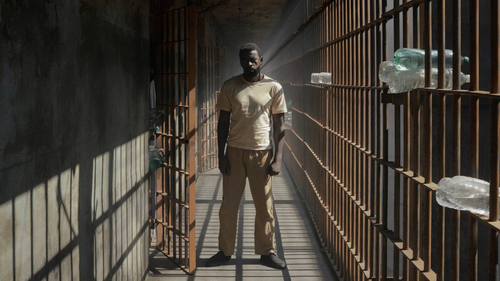

Irmandade é uma série brasileira de drama e suspense que segue a história de uma advogada que volta a ter contato com o irmão líder de uma facção criminosa. A trama se passa em um bairro pobre e violento de São Paulo e aborda temas como lealdade, corrupção e violência. A série é bem construída, com atuações de alto nível e uma trilha sonora envolvente.